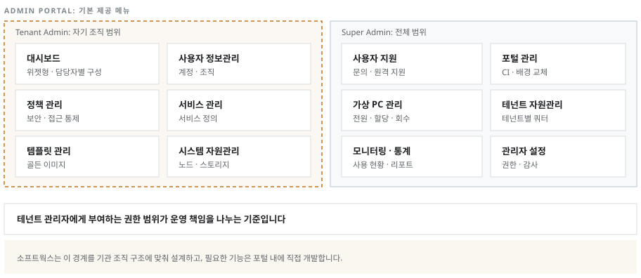

관리 업무 전체를 단일 포털에서 수행합니다
대시보드 · 사용자 정보관리 · 사용자 지원 · 포털 관리 · 정책 관리 · 서비스 관리 · 가상 PC 관리 · 테넌트 자원관리 · 템플릿 관리 · 시스템 자원관리 · 모니터링 통계 · 관리자 설정을 기본 제공합니다. Super Admin과 Tenant Admin으로 권한을 구분해 운영 책임을 분리할 수 있으며, 대시보드는 담당자별로 구성을 달리하는 위젯형입니다.

소프트웍스가 하는 일
고객사 및 공공기관의 특수한 환경에 맞춰 기존 인사 시스템과의 계정 자동 동기화, 다중 인증(MFA/2차 인증) 연동은 물론, 기관 전용 특화 기능까지 완벽하게 개발 및 구축을 제공하며, 조직 구조에 최적화된 테넌트 관리자 권한 체계까지 섬세하게 설계합니다.